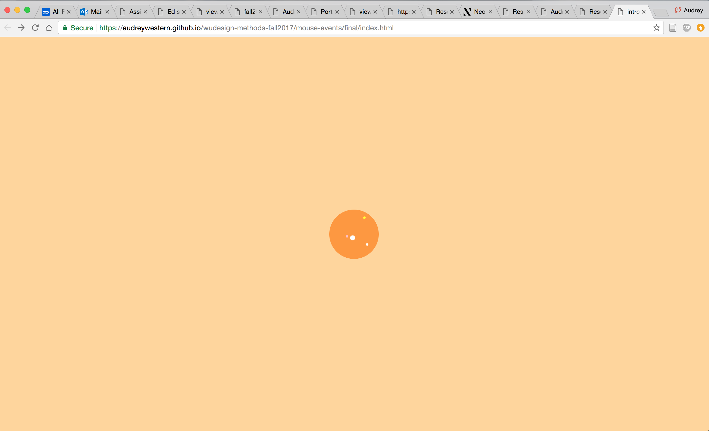
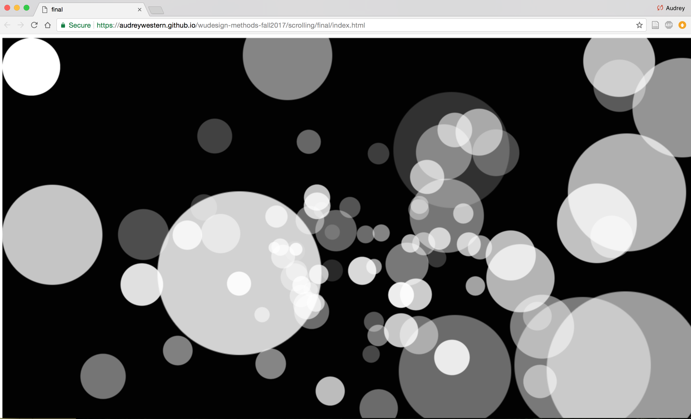
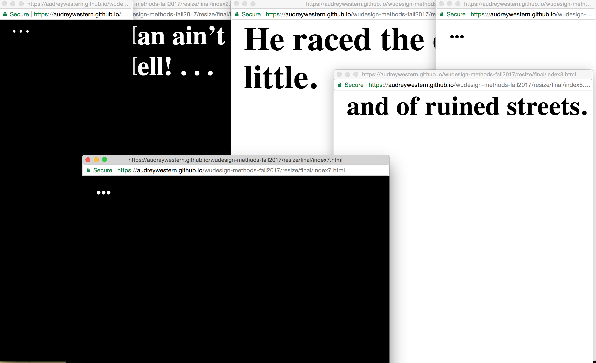

Audrey Western
Form and Interaction Portfolio
In the sites, I present non-traditional forms of interaction in which the browser is no longer just a repository for viewing websites, but an artistic medium for visual production. Visitors find that common navigational elements no longer caused the standard effects, but led to an atypical, immersive, and multi-sensory experience.

Click

Scroll

Resize